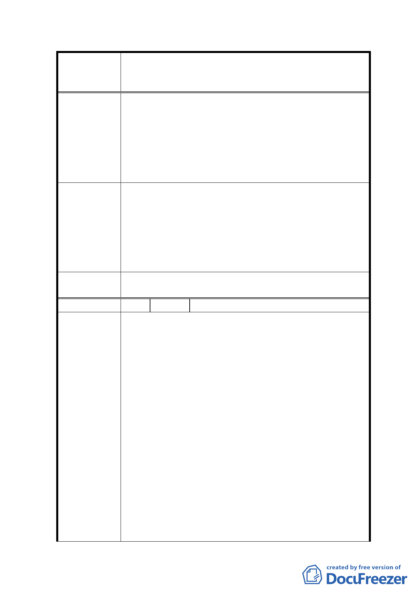

變更及修訂臺北市中正區永昌段四小段 48 地號等 380
案 名 筆土地（徵求參與「促進都市再生 2010 年臺北好好看」
開發計畫 7 處基地回復原都市計畫案）細部計畫案
一、本次公告公開展覽訊息未知會所有住戶。
二、目前房屋使用狀況良好，不須都更，民生社區保持
單純安靜（人少）最佳居住環境。
三、「誠美建設」無都更案經驗，計劃步驟混亂，無公信
力。
四、時機點不好，「文林苑事件」建商炒作都更的作法，
令人生厭，應暫停都更。
一、建立具公信力的機構，辦理都更。
二、爾後都更計畫核定後在權利變換之前（即尚未同意
分配條件前）住戶條件談不攏或時間過長都可退出。
建 議 辦 法 三、在取得住戶同意書時，必須出具權利價值變更計畫，
讓住戶充分了解都更後的權益。
四、單一房屋住戶參與都更，應比照首次購屋條件辦理
低率貸款，供其裝潢等。
委員會決議
所提意見非涉本次計畫變更緣由，錄請市府納入後續辦
理都市更新作業參考。
編 號 2 陳情人 興南建設股份有限公司
一、97 年 1 月本公司以土地所有權人身分申請劃定台北
市內湖區文德段四小段 20 地號等 37 筆土地為兩完
整街廓之自辦更新單元，於 97 年 12 月本市都市計
畫委員會第 589 次委員會議都更單元劃定審查會
中，被告知與 2010 他案基地範圍大部分重疊，為此
因他案屬政策之案件，故將本公司申請案擱置。
二、2010 他案係將臨民權東路尚未建築之商業用地及相
鄰廣場、道路等納入，嗣 98 年 7 月市府依都市計劃
陳情理由
法苐 27 條第 1 項第 4 款「為配合政府興建之重大設
施」據以公告公開展覽文德段四小段 16 地號等 47
筆土地之細部計畫案（詳附件二）。又於 99 年 7 月
依都市更新條例第 6 條「建物窳陋、傾頹」等事由
公告「優先」劃定文德段四小段 16 地號等 32 筆土
地為公辦更新地區及上述 47 筆土地為都市計劃範圍
（詳附件三）。
經多年觀察上述地區，除不宜取消原劃定更新地區、
廢棄業經審議及公展之細部計畫外，更應擴及廣場週
邊未納入之道路、市場用地和其週邊道路，重新規劃
-7-